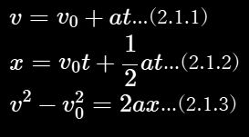
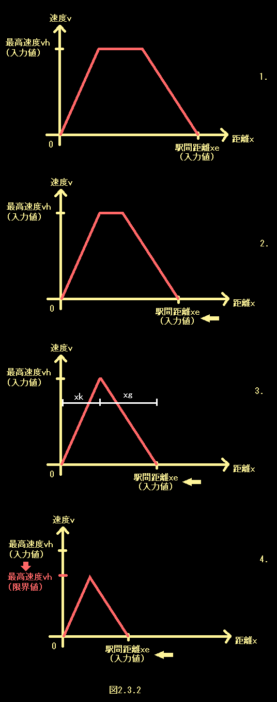
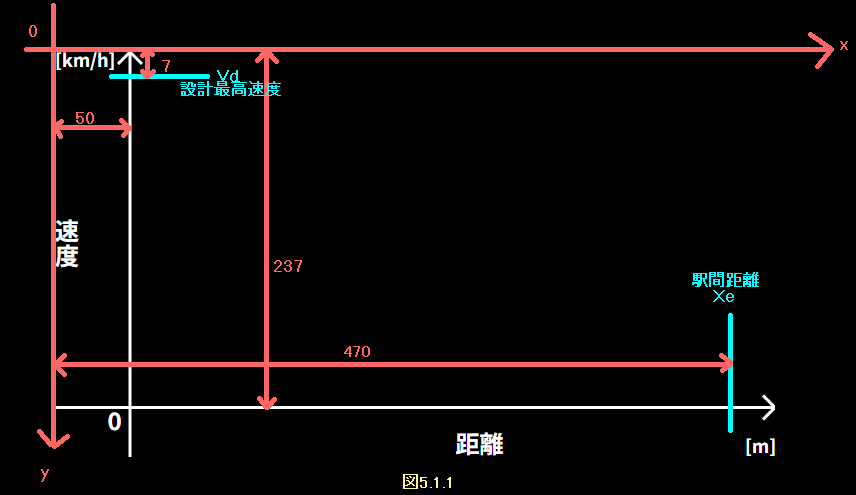
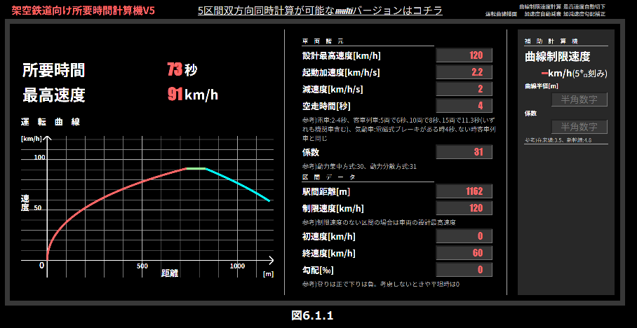
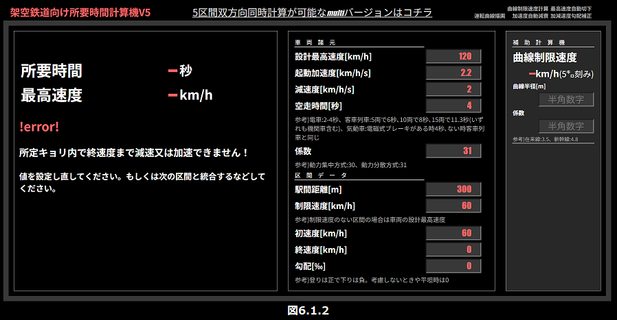

架空鉄道向け所要時間計算機における計算の概要
このページは当機内部でどのような計算が行われているか説明するページです。ソースコードだけだと分かりずらいし文字起こししておこうということです、実際のところ私も煩雑化したコードのどこが何の機能なのか忘れかけてたもので...
御託はいいからとっととツール出せ！！！という方は下記リンクをクリックしてください。
架空鉄道向け所要時間計算機/ダウンロード不要/完全無料/広告なし/2025年最新版もくじ
0.当機の主な特徴
はっきりいってこれを書きたいがためにこのページ作ったまであります、こんなことできるんだぞどうだすごいだろ！！と...
1.リアルタイムで計算結果が出てきます これのおかげでめっちゃ楽になった。
2.見た目が非常に私好みです 上にカーソル合わせると文字の大きさとか色が変わる部分とかめっちゃよくね？
3.最高速度まで加速しきれないときとか勝手に加速可能な速度を求めてそれで計算してくれます これあるとないじゃだいぶ手間が変わってきますな。
4.エラーのときはちゃんと大体の原因を示してくれます クッソ分かりやすくていいよね。
5.勾配とか空走時間とかも考慮に入れた計算ができます なかなかレアな機能なのでは。
6.初速度終速度を0以外にも設定できるので区間の途中で制限速度が変わるとことかもいけます 優等種別にも応用できるぞ！
7.速度が高くなると加速度が自動的に減衰します たぶんどのツールでもやってないんじゃね？まあ近似値なんだけど(詳しくは4章)
8.運転曲線が描画できます なにより見てて楽しいし、もちろんリアルタイムで更新されるぞ！！
9.5区間双方向同時計算が可能です(multi版) 上りと下り、条件を反転させて勝手に同時計算してくれるぞ！！
1.あらまし
まず、電車は加速して惰行して減速するのでそれぞれに対し時間を求めて合体しようといったところだ。 だがこのままだと区間が短すぎて最高速度までそもそも加速できなかったり、初速度から止まるための距離がそもそも足りなかったりと色々不都合が出てくる。 このままではいけないので最高速度を自動的に到達可能な速度に切り下げたり、止まれない場合にエラーメッセージを搭載する分岐を作らなければならない。めんどくさ。
ここでは、白字で計算式自体についての説明、黄字でプログラム、コーディング的な事項についての説明をする。
2.根幹となる式(Ver1系列)
とりあえずバージョンを追って説明していく。はからずとも絶対そっちのがわかりやすくなっていたので。
また、この文章では特に注のない限り長さの単位をメートル、時間の単位を秒、勾配の単位をパーミルとして全ての式を組み立て、減速度は正の数で入力されるものとする。
2.1.高校物理の式
こういう話をするとき、高校物理を通ってきた人間なら真っ先に思い浮かぶ式があるだろう。
てか私もそうだった、ちょうど架空鉄道がちょっとしたマイブームになってた時にこの式習ったもんだから(因みに当時作ってた長崎海浜鉄道という架空鉄道にもこのツールのVer2.1時点での説明みたいのが途中までされてたりする)。
では(2.1.1)式を変形すると...
速攻解決した、最高かよ...となりそうだがそうはいかない。ここで最終的な所要時間についての式を立ててみよう。

tsは最終的に求まる所要時間だ。vh~agも車両や路線のデータを入力すればいい。あれ？x惰行(惰行距離)はどうしよう...
2.2.惰行運転する距離
そろそろ文に区切りをつけたかったので見出しをたてたが、惰行距離を求めることはすぐできる。単純に駅間距離から加速にかかった距離と減速にかかった距離を引いてやればいいのだ。ここで、(2.1.2)式を使いたくなりそうだがこの式で距離を求めるなら時間tが必要だ。しかしこの時間tこそ私たちが分からないので求めようとしている値であるためにこの式は利用しない。
ここで、(2.1.3)式を変形してみよう。

よって、

できた。これで完璧なように思えるが、そうはいかない。そしてここに当機の目玉となるある機能が搭載されるに至った所以が存在するのだ。
2.3.最高速度自動切り下げシステム
もう字面からして最高の機能に違いない。なんせしょっぱなに"最高"とかついている。いやホントに便利な機能なのである、まじで。
さて、今までで組んだ式をv-xグラフにするとこんな感じになる。
さて、このようにユーザーが入力した最高速度まで加速、そっから惰行、減速までできればいいのだが...ここで駅間距離を少しづつ縮めてみよう。
最低だ。駅間距離が短すぎて入力した最高速度まで加速できない。駅間が短くなると最高速度にも限界値ができるのだ。この状況でエラーを吐くようにプログラムする手もあるのだが、それだと限界値を自分で目星付けるなどして入力しなおすのを繰り返さなければならない。でも私はそんなことやりたくない、めんどすぎる。なのでこの状況に至った時に最高速度を0.01m/sずつ切り下げるプログラムを組むこととした。
分かりやすいようにフローチャートとやらにしてみた、なんかいい感じ。知らんけど。
しかし、このプログラムにも欠点がある。余りにも大きい値(10000km/hとか)を最高速度に入力されると切り下げの計算が終わらず処理が長期化、フリーズする場合がある。なのでくれぐれも最高速度は常識的な値を入力するようお願いしたい...
2.4.切り下げすぎてしまう(ver1.2)
さて、このように利便性のすごい高い自動切り下げ機能だが、使っているうちにどうも切り下げすぎてしまうらしいということを発見した。便利さゆえの悩みである、ああ贅沢...

図2.4.1、3番目のグラフのようになったときにどうなるかを考えてみよう。このまま計算した場合、(2.2.2)式に従えば、減速距離が負となってしまうのである。これはいけないのでエラーメッセージを表示するようにした。
ここで思った方もいるだろう。終速度(と初速度)にも自動切り下げシステムを導入すればいいのではないかと。そのとおりである。しかしこの当時は思いつかなかったのかまだ実装されていないのである。多分そのうち作る。(2025.5.30現在)
あともう一つ、このシステムでは0.01m/sずつ切り下げているがゆえに、厳密にいうと"真の限界速度からわずかに小さい値"を最高速度と近似しているということになる。つまり
このように真の値と最終速度の差がとても小さい場合に最終速度まで加速可能にもかかわらず切り下げすぎとなりエラーとなってしまう場合がある。これを防ぐためにエラー判定をするまえに最高速度=最終速度とした場合の加減速距離を計算するようなプログラムを組んだ。
2.5その他エラー
初速度や終速度にそもそも最高速度より大きい値が入力された場合もエラーメッセージが出るようにした。
2.6 根幹となる式の結論
この二つの式と最高速度自動切り下げシステム、各種エラーログで動作するバージョンであった。
3.勾配を考慮した式(ver2系列)
さて、基幹となる式とプログラム的な分岐は組むことができた。ここで次に考慮すべき事項は
1.勾配による影響
2.車両諸元にしばしば示されている起動加速度は速度が上昇した場合実際の加速度と乖離する点
この章では1番について解決するものとする。2番に関しては等加速度運動から外れてしまうため、当時高校生だった制作者には解決することができなかった。
3.1.勾配がある場合の減速にかかる距離の式
過去に制作していた架空鉄道にて、下り勾配に制限速度かかかる理由を調査していた一環で勾配がある場合の減速にかかる距離の式を発見した。発見の経緯などは長崎海浜鉄道に記載されている。
『鉄道電気技術者のための信号概論 閉そく装置』(日本鉄道電気技術協会、2008年4月)が引用されている『電車はブレーキをかけてから何mで停止できる？新幹線は？列車脱線事故の京浜急行電鉄は？』https://www.excite.co.jp/news/article/Bizjournal_202001_post_134461/ (梅原淳、2020年1月)によると、
S＝V1の二乗-V2の二乗÷7.2×（β+θ÷K）+t×V1÷3.6 [m]
V1は初速度（km/h）、V2は終速度（km/h）、tは空走時間（秒）、βは減速度（km/h/s）、θは勾配（パーミル）、Kは係数で電車による列車は31、機関車に牽引される客車による列車は30。
これを当機で使用する変数に置き換え整理すると、

ここで、(2.2.2)式のxgと見比べてみると、勾配によって減速しやすくなるため減速度に+s/3.6kが、距離全体に+vhfr(空走距離)がされているだけで、基本的には同様の形を保っていることがわかる。逆に加速について考えてみると、勾配によって加速しづらくなるため加速度に-s/3.6kがされ、ブレーキによる要素である空走距離は考慮しなくてよいため、

となると考えられ、それぞれ(2.1.5)式と(2.2.2)式のak,agを置き換えることにより勾配と空走時間を含めた計算ができると考えられる。
3.2.急すぎる勾配により加速減速ができない場合
(3.1.1)式及び(3.2.2)式に従う場合、登り勾配において加速できない場合や下り勾配において減速できない場合が生じる。登り勾配の時はak-s/3.6kが、下り勾配の時はag+s/3.6kがそれぞれ0以下の場合に加減速ができないことがわかる。それぞれの場合においてエラーメッセージを表示する必要がある。
3.3.減速しない場合
(3.1.1)式に従う場合、減速しない場合でも減速にかかる距離が存在してしまう。そのため、vh=vfのときはxg=0とする処理を各段階に加えるべきである。
4.加速度が一定でないことを考慮した式(Ver5系列)
今までは加速時の列車が等加速度運動をするものとしてきたが、残念ながら列車の加速度は一定ではないのである、速度が上がるほど加速度は低くなる、くそったれ。当時高校生だった制作者には等加速度運動の領域を出た運動に関しては未知の世界であった。推測しようにも頭が足りなかった。
...しかし最近UIを改良した折に考え直してみたら、なんとなくいける気がしてきてしまったので考えてみよう。
※以下、制作者の推測的内容が今までより多く含まれます。くれぐれもご注意ください。
4.0.方針
列車の加速度が一定でないことについて様々調べているとおそらく起動加速度の値だけでなく、かなり本格的にやりこんでいる架鉄製作者しか考慮していなさそうな一般的に入手及び決定が困難な値が関与してくることは容易に察知することができるだろう。しかし、そのような値を正確に理解しツールに落とし込むのは製作者にとっても一朝一夕でできないような至難の技である()
しかも、そんなマニアック過ぎる値の入力を要求してしまっては(私自身を含め)大多数の架鉄製作者にとってこのツールは無用の長物、役立たずの木偶の棒と化してしまう！！
よって、ユーザーに要求する値をできるだけ増やさない方向性での改良を試みた。(実際この改良によってユーザーが新たに入力しなければならなくなったのは車両の設計最高速度のみである。)
4.1.運転曲線(v-t曲線)をもちいた近似
どのくらい加速度が低くなっていくのか、それを知るために実際の運行時のv-t曲線のネタになるようなデータを入手し、pythonで曲線近似する方法が考えられる。
そこで、スピードメータのついている前面展望を参考に時間と速度を取得する手法をとることにした。今回の数値取得にあたっては『【4K前面展望】福岡縦断！鹿児島本線 快速 久留米→博多→小倉【速度計·地図付】 4K FrontView Kagoshima Main Line Rapid Kurume-Hakata-Kokura』 https://www.youtube.com/watch?v=JdCgHFxTLSU (TrainView列車展望チャンネル、2022年7月)を参考資料とした。
今回は東郷駅発車後の加速時のデータを用いた。理由としては
1.連続的な加速範囲が最大級(0→104km/h)のため
2.勾配や曲線、分岐器の影響が小さいと見られたため
3.同様の条件が見られると思われた戸畑駅出発後より明らかに加速がスムーズであること(10秒ほど差がある)
があげられる。

図4.1.1は発車から最高速度到達までの1秒ごとの速度をプロットしたものである。一見直線近似したくなるものの、それだと等加速度運動になってしまい意味をなさないのでとりあえず二次曲線近似をしてみた。
出発直後のデータにおいて近似曲線との差が大きいのは速度計に用いられているであろうGPSの精度に起因するものであると思われるためここでは特に考慮しない。また、分かりやすいように微分したa-tグラフも描きだした。2次曲線の頂点における速度は約135km/hであるので、
初加速度:2.28km/m/s
加速度が0になる速度:135km/h
の等加加速度運動に近似されていることがわかる。ここで、このデータが計測された813系電車は
起動加速度:2.3km/h/s
設計最高速度:120km/h
である。以上のデータよりここでは列車の加速を"初加速度が起動加速度で設計最高速度より15km/h大きい速度において加速度が0となる等加加速度運動"、さらに"初加速度が起動加速度で設計最高速度より4m/s大きい速度において加速度が0となる等加加速度運動"に近似して考えるものとする。
4.2.等加加速度運動(等躍度運動)
計算に使用する式を直接導出する前に、2.1章のように基本的な式を列挙しておこう。まずは加加速度に対して時間積分を繰り返す。
よって、各式と定数j,a0,v0,x0の値が判明すれば各種値が求まる。
ここで、今までのバージョンで導出した式を応用するために必要な情報について考えてみると、初速度と最高速度を決めた場合に加速にかかる時間と距離が計算できる式が必要であるので、まず(4.2.2)式をtについて解くと、
となり、これを(4.2.3)式に代入すれば距離も初速度と最高速度から求まる。
4.3.等躍度運動へ近似
"初加速度が起動加速度で設計最高速度より4m/s大きい速度において加速度が0となる等加加速度運動"をv-t曲線に示すと

よって、次式が成り立つ

時間微分すれば加速度となるため、勾配を考慮するため右辺からs/3.6kを引き、

となる。そして、t=0の時x=v=0より

また、j＜0のため、(4.2.4)式において±を+にした場合に図4.3.1v-t曲線の頂点より左側(今回使用する区間)の値、-にした場合は頂点より右側の値になる。よって±は+とする。
ここで、初速度vsから最高速度vhまで加速する場合の式をまとめると、
となる。
4.4.減速時への適用について
先ほどと同様、今度は赤間駅手前で減速したときのデータをグラフに描画した。
黄色が元データ、赤が2次曲線近似、水色が線形回帰グラフであるが、ほとんど差がないことが見て取れる。減速度は概ね2.5km/h/s付近で一定である。そして813系電車の減速度は4.0km/h/sであり、あまり関係性が見えてこない。これはおそらく運転士が減速度が一定に近くなるようにブレーキを調節しているからだと思われる。よって、減速時には等躍度運動への近似は行わない。
4.5.加速できる最高速度が勾配により設計最高速度vdより低くなる可能性について
まず、加速できる最高速度は加速度が0となる速度のことである。そのため、(4.2.1)式を変形し、

とすることで、出発後何秒で加速が止まるかを計算でき、それを(4.2.2)式に代入することでその時の速度、すなわち加速可能な速度が求まる。その速度をvlとすると、

これより、まず終速度より低い場合は「加速度補正と勾配の為vl(小数点以下は切り下げる)より高い速度を出すことができません、終速度をそれより低く設定してください」とエラーを表示し、初速度vsより低い場合にはそれ以上の加速ができない為最高速度vhを初速度vsまで引き下げ、そのどちらもにあてはまらないときで最高速度より低い場合最高速度vh>vl(Vh=Vlとすると加速度0の区間が加速時間の計算に含まれてしまいバグが生じる為ここではVh=Vl-0.001とした)としなければならない。その後通常通り計算処理を始める。
5.運転曲線描画機能(Ver6系列)
さてと、なんかもっと見た目を面白くしたかったので運転曲線もどきを描画してみようなどと思った。で、本当だったらJavascriptのライブラリがあったので使おうと思ってたのだが、どうしてもリアルタイム更新機能に組み込めなかったので自分でコード書く羽目になった。最悪だ。
5.1.基礎となる描画スペース
とりあえずこれは計算が成功した時にJavascriptでsvg要素を挿入してそこに描画するという形で実装した。ここで実際の距離と速度とsvg上の座標を対応させなければならないので、以下のように定めた。 赤色がsvg上の座標、水色が実際の数値に関係する指標である。距離方向に関してはsvg要素の右端付近に駅間距離を合わせるようにした。これは入力に即して自動的に変更される。また、速度方向に関しては設計最高速度をsvg要素の上端付近にもってきた。ここで制限速度をもってくるという案もあったのだが、それだと全てのグラフが縦横目いっぱい使う形になりグラフが代り映えしないのであえて設計最高速度にした。またこうすることで他の条件を固定しつつ制限速度をじわじわあげてくなんて遊び方をしたときにはグラフが上方向に伸びてきて楽しいのである。こういうの大事。で、せっかくなので座標の対応関係についても記しておこう。
この関係性がわかってしまえばあとは楽なもんである。とりあえず速度の補助軸は10km/h毎に設計最高速度までループ処理をして線を挿入し、距離の補助軸は100m毎に駅間距離までループ処理をして線を挿入させた。
5.2.惰行区間の描画
簡単なところから手を付けたいと思ったので惰行区間の描画から始めた。(Xk,Vh)から(Xe-Xg,Vh)までの線を挿入すればいいだけである。実はここで一つバグに遭遇しており、勾配により初速度の速度帯では加速ができないものの、最高速度と初速度が同じ等の理由により加速しなくてもよいときは加速距離Xkの算出値がエラーを吐いていたのである。なので加速距離算出の段階で加速のない場合はXk=0とする処理を加えた。
また、惰行距離が0のときについてはそのまま描画しても点ができるだけなので特別な処理はしていない。
5.3.加速区間の描画
5.3.1.いかにして曲線を描くか
加速区間はを描画する場合当然曲線となるわけだが、まずは描画方法を検討する必要性があった。svg要素に挿入できる線の要素として直線やベジェ曲線が挙げられるが、ベジェ曲線の数式を調べ、変形を試みたところどうやらベジェ曲線ではこのグラフは描画できない(もしくは非常にめんどくさい変形が必要だったのかもしれない)ということが分かった。なにしろ始点と終点で3次の定数が決まってしまうのである。そこで、短い直線をたくさんつなぐ方法を採ることにした。
5.3.2.加速区間のv-xの関係
加速区間のv-xの関係については(4.2.3)式や(4.3.1)式を見てみればわかる。ここで、図と共に示して示してみよう。
このように、tを媒介変数としてv-x間の関係を示したグラフが描画できそうだと分かる。また、短い直線をたくさん描画する方法ではvとxの座標をそれぞれ指定できるため一つの式にまとめる必要性はない。
しかし、このグラフでは停止状態から設計最高速度+4m/sまで加速する場合しか示せない。ここで示したい範囲はV=VsからV=Vhの範囲なので、
このようになる。またこの時点で媒介変数tの範囲に着目すれば、t0s≦t≦t0hの範囲におけるグラフであると分かる。よって後はグラフ全体をx軸方向にx(t=t0s)だけ移動してやればいいので、グラフと数式は
となる。よってまずt=t0sとして、v,tの座標をそれぞれ求めそれを始点とし、tに1秒加算した状態でのv,t座標を終点とした直線を引いた。これをt=t0hとなるまで1秒ずつ繰り返して加速区間の描画をした。
また、グラフ上ではvの単位はkm/hのため、3.6倍する必要がある。
5.4.減速区間の描画
減速区間に関しては、(2.2.1)式や(3.1.1)式によれば、
となる。そしてv=vhからv=vsの部分のみを切り出し空走距離に注意してxの範囲を特定すると、
となり、実際には加速区間と惰行区間、さらに空走区間の後に減速区間が始まるためグラフ全体をx方向にxe-(xg-vh*fr)だけ平行移動し、
となる。そして減速区間に関してはxよりもvの方が動かすパラメータとして適切そうなのでv=vhからv=vfまでの区間において、加速距離では1秒ごとで区切って描画したように1m/s毎に区切って描画した。
5.5空走区間の描画
5.4での減速区間の描画では空走区間を描画していないので、別途描画する必要がある。これに関しては(Vh,Xe-Xg)から(Vh,Xe-Xg+Vh*Fr)までの直線を挿入すればよい。
6.多区間双方向計算の実装(Ver7系列)
ところで今までのバージョンでは1区間の入力しかできなかったのだが、実際駅と駅の間ではしばしば制限速度が変わったり勾配の度合いに変化があったりする。それなら区間ごとに区切って値を入れればいいのでは？と思った諸君！！！！！そのような思考は極めて短絡的といえるのである！！！！！！！
それはなぜか？たとえば駅間を2区間に分けたとき、1区間目が制限速度のない区間で、2区間目が制限速度60kmk/hの区間であったとしよう。
6.1.実装の意義
この設定に沿うとまずユーザーは1区間目の計算をする際に、「初速度0km/h、終速度60km/h」という入力をするだろう(最高速度は各社によるだろう)。それは非常に自然なことである。当然そうあるべきである。
では、次の一手としてユーザーはどう入力するのか？当然「初速度60km/h、最高速度及び終速度は0km/h」と入力するはずである。しかし2区間目の距離が短かったりすると...
お分かりだろうか、こうなってくると"2区間目の初速度をエラーが出なくなるまで下げる"→"1区間目の条件を入力しなおして終速度だけ2区間目に合わせて下げて再計算"をしなければならないのである。もちろん区間距離も勾配も制限速度も全部だ。多分この時点でユーザーは最悪だ！！！！ツールとしてクソ過ぎる！！！！！こんなツール二度と使うものか！！！！！！！！製作者は地獄に落ちろ！！！！！！！！！！...などと思うに違いない。いや、そう思わなければならない、なんせ思うだけなら自由なんだから。
じゃあこれを解決するにはどうするべきか？簡単なことである、複数区間を１画面上で一気に並行して計算できればいいのだ。前の区間の終速度を自動的に次の区間の初速度にする仕組みを実装すれば１つの値を調節するだけでこの問題を解決できる。とりあえずUIはわたくしの素晴らしきセンスで組み上げ、内部処理は基本同じことの反復なので代入する値を１区間ずつずらしながら繰り返し処理させた。この辺は特記するまでもない。
さて、ここからは単区間計算では発生しないが複数区間では発生しうる問題を列挙し解決していこう。
6.2.運転曲線の描画について
さて、当機には前バージョンで運転曲線の描画機能を搭載したがこれは距離が0から始まってXe(区間距離)で終わる代物である。しかし複数区間を一気に描画するとなると、始点を前区間までの累計距離とする処理が必要だ。よって新たに累計距離の変数を導入し対処した。
6.3.双方向同時計算も視野に入れた場合の勾配の影響について
例えば勾配の急な区間ではその勾配が列車の加減速度に影響し、(4.5.2)式に示した通り列車の出せる最高速度に影響る場合すらある。そして当然列車は上り下りの両方向で運行されるし、その場合上り下りで勾配の値は反転するしそれにより所要時間にも差ができる。
そこで、逆方向の計算も一括でできるようにした。ここで必要なのは一見初速度と終速度の入替と勾配の値を-1倍することだけに思えたがそう単純にはいかないのである。以下に問題点と解決法を列挙した。
6.3.1.順方向との同時計算が前提であるので、逆方向の計算をする場合は関数にその旨を識別させる必要がある。
これに関しては新たな変数を一つ用意し、順方向の計算が終わったあとに変数の値を変更することで逆方向であることを識別させた。
6.3.2.片方向では初速度や終速度に整合が取れているが、もう一方の方向ではそうはいかない
単に内部処理で初速度終速度を入れ替えるのではなく、ユーザーが個別に調節できるようにした。
6.4.何区間まで一括計算可能にするのか？
このシステムは実際無限に区間の数を拡張できるように思えるが、web上で動かすため画面の広さと処理速度という2つの限界に直面する。実際に現在のバージョンでは5区間までの同時計算にとどまっているが、これは製作者のパソコンにスクロールなしで詰め込める限界量が5区間であったことに由来している。また、リアルタイム更新機能を搭載していることからこの場合従来に比べて最大10倍の計算を短いスパンで繰り返す必要が出てくるが、これをやると製作者のパソコンではカクツキガ生じ少々過負荷なように思われた。これではいけない、このツールは高級なパソコンを持っている人間の為のツールではないのである。下手したら私自身も使えなくなってしまう。そこで、更新頻度をユーザーが直接調整できるような入力欄を設けた。もちろんこの調整もリアルタイムで反映されるし、逆に更新頻度を高くすることもできる。
6.5.空走距離に関する問題について
複数区間を一括で計算する場合に、区間をまたいで連続的に減速する場合があるだろう。この場合空走距離の扱いにも変更が出てくる。
たとえば、この状態から2区間目の距離を1mでも短くすると従来通りなら2区間目は計算不能となってしまう。しかし実際にはブレーキを一旦"かけなおす"必要があるわけではない、つまりひとつながりの減速として空走距離を無視すべき状況が発生するのである。
このような状況で区間距離を1m縮めてみると、エラーログにErr2が表示される。このエラーは説明によれば終速度まで到達できない場合に表示されるエラーである。ここにきて今までの各種バージョンでエラーコードを細分化して設定していたことが功を奏した。ユーザーだけでなくなんと製作者にも優しいウルトラハートフル仕様だったのだ、これは想定外であった。
つまり、「Err=2の状態となる」かつ「前の区間で減速している」場合には、Err2が発生した処理の前段階に戻り空走時間を0秒として処理を再開すればいいのである。そして、Err=2の状態となるのは最高速度自動切り下げシステム内部で切り下げすぎが発生した場合であったため、その箇所を改良した。
では満を持して距離を1mずつ縮めてみよう。
...そう、このままでは空走距離以下の惰行区間が生まれてしまうのである。最悪だ。
しかし、電車のブレーキというのは往々にして調節が効くものである。よってこのような状況の時は多少減速度を落とし、区間距離Xeを距離をめいっぱい使い最高速度(=初速度)Vhから終速度Vfまで減速すると仮定し、補正すればよい。
このとき、補正後の減速度は(2.1.3)式を変形し(Vh^2-Vf^2)/2Xeとなる。よって、補正後の減速度を実質減速度として定め、この補正のない場合その変数には勾配による補正をした減速度を代入すればよい。
ちなみにこの変更によってグラフ描画のための式も減速度周りを実質減速度に置き換える必要があるし、減速距離をもういちど算出する必要性があった。
7.UIの改善と補助ツールの実装(Ver3,4系列)
さて、この文章は当初所要時間についての計算式の発展向上の過程を記すために作成していたため、UIの改良や本筋から外れる計算式についての解説はされていなかった。よって所要時間についての計算式がある程度安定してきたこの段階においてそれらの事項についても記述しておこうと思う。
7.1.ポップアップウィンドウからリアルタイム更新へ(Ver3系列)
当機はVer3.0にいたる以前は操作性に非常に難があった。具体的には
ページを開くとその上部に最初に加速度[km/h/s]という文章と入力欄、OKボタンのあるポップアップウィンドウが表示される。ひとまずこれに加速度を入力し先に進んでみよう、すると...
減速度[km/h/s]という文章と入力欄、OKボタンのあるポップアップウィンドウが表示された。そう、つまりこの時点ではこの後も初速度→終速度→最高速度→勾配→係数→空走時間の順にポップアップウィンドウへの入力が課されていたのだ。そしてそのすべての入力が終わればやっと１区間(もちろん片方向だ！！)の計算結果が表示されるといった具合である。これのどこが問題か、ここまで読んできたならもはや説明不要である。車両の加速度や減速度などという固定の値に関しても毎回入力しなければならないし、もしエラーが出たら１つ値を変えるのを試すために全てやり直しだ。しかも途中で間違った値を入力したり未入力であってもついつい勢いでEnterキーなどを押してしまえば次のポップアップが勝手に出てきてしまうし後戻りも効かない...もう書いてて疲れてきたよ。
このように操作性に問題が山積みであったため、画面上に固定されている入力欄から値を取得して計算をする方式に変える必要性があったのだ。こうすれば固定値は１回入力すれば済むし、エラーが出ても一つづつパラメータを変えて試すことが容易になる。そしてリアルタイム更新機能と合わせることでOKボタンを押すといった手間からも解放されたのだ。
7.2.曲線制限距離計算機の実装(Ver4系列)
列車は曲線上を走る際にはスピードを落とすことが多い、乗り心地に配慮している他余り大きい速度でカーブに突っ込むと脱線事故にも繋がりかねないからである。そこで、カーブ半径と速度制限の関係性について調べていたところ、JRでは以下のように定義していることが判明した。
よって、この式にのっとり曲線半径と係数から制限速度を自動算出する機能を搭載した補助計算機を実装した。また、実際の速度制限は5km/h単位以上に細かく設定されているのを(少なくとも私は)聞いたことがなかったため、自動的に5km/h単位で切り下げる機能を搭載した。
この機能はあくまで使いたいときだけ使う補助機能として開発したため、本体の最高速度の入力欄に自動反映することはしていないが、何らかの連携ができるような機構があってもいいかもしれない。
8.処理の軽量化(Ver7.1,7.3)※執筆中
ここまでこのツールは多数の機能や計算処理を実装してきたが、これに伴い処理速度の低下が散見されるようになった。ここで、処理が重くなってしまう主な原因としてあげられるのは大きくわけて
1.運転曲線の描画
2.最高速度自動切り下げ処理
3.リアルタイム更新
である。しかし、これらの問題は実際に使用するうちにそれぞれ影響の程度が異なることがわかってきた。まず、通常の範囲内で使用する場合には自動切り下げ処理の長期化は起こらない。それに対し、運転曲線の描画においては通常の範囲内(例:合計で10kmの区間)の描画であっても処理速度の低下を来たしていた。よってまず運転曲線描画処理の軽量化を行うこととした。
8.1.運転曲線描画処理の軽量化
まず、実際に利用するときは最高速度と区間長を入力した段階でグラフの補助線が描画される。現時点では補助線は10km/h及び100mおきにひかれる為、数が無限に増えてしまう。例えば10000mの区間長を設定すれば補助線は100本にも及ぶこととなるし、この時点で次の値を入力するとカクついたり私のPCのファンが音を立てて回り始めるなど意外と影響が大きい。しかも、補助線の間隔が適切でなければ運転曲線の視認性すなわち存在意義が失われてしまうのでまずここから手を付けることとした。
8.1.1.補助線間隔の自動調整
具体的にどの速度、距離で補助線の間隔を調整するかを決定しなければならない。そのためまずどの本数までなら見た目や処理速度的に許容できるかについて、
速度補助線:20本程度
距離補助線:50本程度
と定めた。このとき補助線の間隔を変化させないといけない速度や距離は、
200km/h及び5000m
である。
ここで、間隔を切り替える次の速度や距離としてキリがいいのは、
500km/h及び10000m
さらに、
1000km/h及び20000m
2000km/h及び50000m
5000km/h及び100000m...
といった具合に上一桁が1,2,5となるときに切り替えることにすればよさそうである。ここで、速度域に関して補助線間隔や最大補助線本数を表にまとめてみると、
| 速度域 | 速度補助線間隔 | 最大補助線本数 |
| 0~200km/h | 10km/h毎 | 20本 |
| 200~500km/h | 20km/h毎 | 25本 |
| 500~1000km/h | 50km/h毎 | 20本 |
| 1000~2000km/h | 100km/h毎 | 20本 |
| 2000~5000km/h | 200km/h毎 | 25本 |
| 5000~10000km/h | 500km/h毎 | 20本 |
| ... | ||
| 表8.1.1.1 | ||
となる。これを実装するために一般化をすると、
1.0~200km/hのときは10km/h毎に補助線を引く
それ以上のとき
2.上一桁が1のとき桁数を一つ落とした上一桁が1の数毎に補助線を引く
3.上一桁が2,3,4のとき桁数を一つ落とした上一桁が2の数毎に補助線を引く
4.上一桁が5,6,7,8,9のとき桁数を一つ落とした上一桁が5の数毎に補助線を引く
となる。これを実装するためには桁数と上一桁の値を取得して分岐処理を行えばよさそうである。ここで、桁数は設計最高速度の常用対数をとって整数部分を見ればいいし、上１桁の判別にも小数部分をみればいい。これをフローチャートにしたものを以下に示した。

また、距離の補助線については
| 速度域 | 速度補助線間隔 | 最大補助線本数 |
| 0~5000m | 100m毎 | 50本 |
| 5000m~10000m | 200m毎 | 50本 |
| 10000m~20000m | 500m毎 | 50本 |
| 20000~50000m | 1000m毎 | 50本 |
| 50000m~100000m | 2000m毎 | 50本 |
| 100000m~200000m | 5000m毎 | 50本 |
| ... | ||
| 表8.1.1.2 | ||
一般化してフローチャートに表すと

9.積み残した課題(2025年6月14日時点)
1.初速度及び終速度自動切り下げ機能
5区間双方向同時計算機能の実装により解決がさらに困難になったように思える、まじでどうしたものか...
2.曲線制限距離計算機(補助ツール)と本体の連携
補助ツール搭載以降の度重なるメジャーアップデートに押されずっと放置していた事項だが、これも5区間双方向同時計算機能の実装により解決がさらに困難になったように思える
3.おもに最高速度自動切り下げ機能における極端に大きな値を入力した場合の処理の長期化
これもどうにかしなければならない。実は最近解決案が思いついたのでじきに実装されるだろう
10.参考資料
1.『鉄道電気技術者のための信号概論 閉そく装置』(日本鉄道電気技術協会、2008年4月)が引用されている『電車はブレーキをかけてから何mで停止できる？新幹線は？列車脱線事故の京浜急行電鉄は？』https://www.excite.co.jp/news/article/Bizjournal_202001_post_134461/ (梅原淳、2020年1月)
2.『【4K前面展望】福岡縦断！鹿児島本線 快速 久留米→博多→小倉【速度計·地図付】 4K FrontView Kagoshima Main Line Rapid Kurume-Hakata-Kokura』 https://www.youtube.com/watch?v=JdCgHFxTLSU (TrainView列車展望チャンネル、2022年7月)